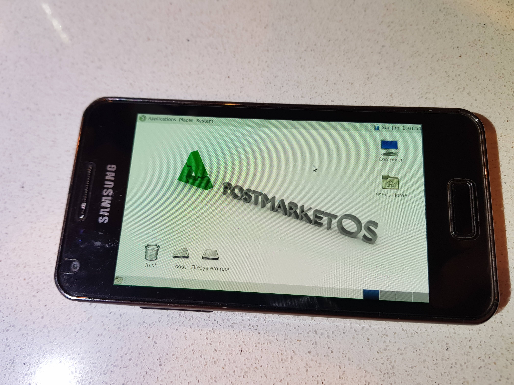

MATE
|
 MATE running on Samsung Galaxy S Advance (i9070) | |
| In postmarketOS | |
|---|---|
| Package | postmarketos-ui-mate |
| Status | Available |
{kind=link}
MATE is a desktop environment forked from the maintained code base of GNOME 2. It is installable on postmarketOS. However, it's less touch-friendly and configurable than Xfce4.
Contents
Installation
Run pmbootstrap init and choose mate in the interface section.
Additional software can be added at pmbootstrap init in step "Extra packages" or later on by sudo apk add ..., see also MATE#Additional_software.
Display
Follow the Display guide to optionally change it to landscape mode or fix display related issues.
Input
- Disable mouse cursor by
sudo vi /etc/lightdm/lightdm.conf, change#xserver-command=Xtoxserver-command=X -nocursor, logout or reboot. (On new edge installations, this is done by autostart commandunclutter-xfixes --start-hidden --hide-on-touch.) - To simulate right mouse clicks with the touchscreen, long-click the return key of the onboard keyboard to get some mouse click options at the right side of the keyboard. For other possibilities of right mouse click emulation, see Input_methods#Simulate_secondary_click.
- Currently there is an issue with touch events in the panel, see pmOS #1308 and upstream.
- Clicking the onboard icon in the panel shows or hides the virtual keyboard. In the settings of onboard, a bigger floating icon for show/hide can be enabled.
Lock screen
Screen locking and virtual keyboard was not set up until recently. On new edge installations, screen lock kicks in when the screen saver gets active. For unlocking, onboard keyboard with layout "Phone" is called.
For devices with a hardware keyboard, this is unfavorable. The virtual keyboard can be disabled by command gesttings set org.mate.screensaver embedded-keyboard-enabled false.
For touch devices with bigger screen, the layout can be changed to e.g. "Compact" by gesettings set org.mate.screensaver embedded-keyboard-command 'onboard -e -l Compact'. For more options of the onboard command see e.g. debian manpage.
The onboard keyboard takes quite some time to show up when unlocking. Alternatively, matchbox-keyboard can be installed and then applied by gsettings set org.mate.screensaver embedded-keyboard-command 'matchbox-keyboard --xid'. However, it's not as configurable as the onboard keyboard.
LightDM
Autologin is configured by default. If you want to use LightDM as a login screen, see Display_manager#LightDM how to set this up.
Disk management
With the set of installed software, additional drives are not shown in the file manager. Install gvfs (already implemented on edge) and udisks2 to make them available. (For more information see also pmaports#1377.)
As a graphical interface for formatting drives or image writing, e.g. package gnome-disk-utility can be installed (this installs udisks2 as well). After installation, it's at Accessories -> Disks.
Bluetooth
Install package blueman, do sudo rc-update add bluetooth default and reboot. (On edge installations, bluetooth service is already enabled. On new edge installtions, Blueman is pre-installed.)
The tray icon needs right-clicking (for right-clicking see MATE#Input above). Alternatively use System -> Preferences -> Hardware -> Bluetooth Adapters and Bluetooth Manager, and sudo rfkill unblock bluetooth or block respectively to enable/disable.
When packages pulseaudio-utils and pavucontrol are installed (implemented on new edge installations), the audio output can be changed at System -> Settings -> Other -> PulseAudio Volume Control -> Output Devices -> click the check button at the device you want to use.
For more information and troubleshooting see Xfce4#Bluetooth and Bluetooth.
Additional software
-
gvfsto make the trash can accessible. (Implemented on edge.) -
gvfsandudisks2to make "removable" drives available. (gvfsalready implemented on edge.) -
mate-tweakto disable/enable desktop icons and some other tweak stuff. (Implemented on edge.) - For sound to work out of the box, install
pulseaudio-utilsandpavucontrol. (Implemented on new installations by MR pmaports !2820.) - As a browser, install e.g.
firefoxorfirefox-esr. To enable touch screen behaviour, add a new filesudo vi /etc/profile.d/firefox-touch-scrolling.shand writeexport MOZ_USE_XINPUT2=1, inabout:configchangedom.w3c.touch_events.enabledfrom 2 (default, auto-detect) to 1 (enabled). For better touch screen usability, install packagemobile-config-firefox(more information). - For phone applications, try
calls,chattyandgnome-contacts, which are used in Phosh. Packagemodemmanagerneeds to be installed (gets installed automatically with these packages), start the service bysudo rc-service modemmanager start, add it permanently bysudo rc-update add modemmanager defaultand reboot. - To view PDF files, install package
atril, for alternatives see PDF#PDF_viewers. - Graphical interface for formatting drives or writing images e.g.
gnome-disk-utility.